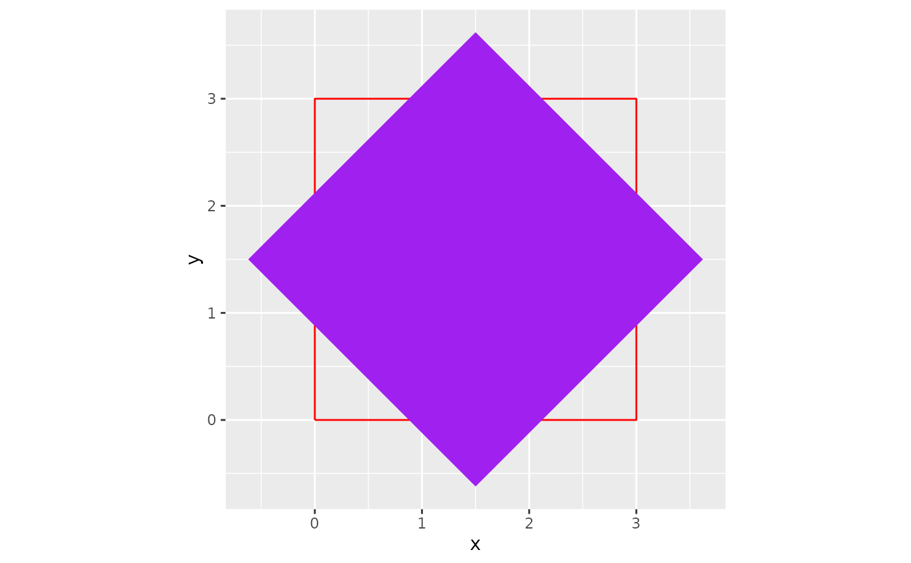

Rotates the x and y points in a given data frame by a given angle based on a designated anchor point.
Arguments
- data
A data frame or tibble with at least
xandyvariables- x
A numeric variable in
data. The variable intended to be plotted on the x axis in aggplot.- y
A numeric variable in
data. The variable intended to be plotted on the y axis in aggplot.- angle
The angle (in degrees) the points in
datawill be rotated around it's anchor- anchor
The anchor point for the rotation. Default is "center". Options include:"center", "bottom", "top", "left", and "right"
- drop
Logical
TRUEorFALSEthat determines if all other variables that are not being rotated are removed from the final output. Default isFALSE.
Examples
library(ggplot2)
original_square <- data.frame(
x = c(0, 3, 3, 0, 0),
y = c(0, 0, 3, 3, 0)
)
rotated_square <- rotator(data = original_square,
x = x,
y = y,
angle = 45,
anchor = "center")
ggplot()+
geom_path(data = original_square,
aes(x,y),
color = "red")+
geom_polygon(data = rotated_square,
aes(x,y),
fill = "purple")+
coord_equal()
